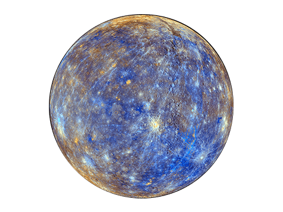

Mercury is the smallest planet in the solar system and the closest to the Sun. It completes an orbit around the Sun in just 88 Earth days, making its year the shortest of any planet.
Mercury has been known since ancient times because it is visible to the naked eye. It was named by the Romans after the swift messenger god Mercury, likely because of how quickly it appears to move across the sky compared to other planets.
Mercury has a diameter of about 4,879 kilometers, slightly larger than Earth's Moon. It orbits the Sun at an average distance of about 58 million kilometers, though its highly elliptical orbit means this distance varies significantly.
Mercury has an unusual relationship between its orbit and rotation, completing three rotations on its axis for every two orbits around the Sun. This means a single solar day on Mercury, from sunrise to sunrise, lasts about 176 Earth days, even though its year is only 88 Earth days long.
Mercury's surface is heavily cratered, similar in appearance to the Moon, with impact basins, plains, and long cliff-like structures called scarps. These scarps are believed to have formed as the planet's interior cooled and contracted over billions of years.
Mercury has almost no atmosphere, only a thin exosphere made of atoms blasted off its surface by solar wind and micrometeorite impacts. Without an atmosphere to retain heat, temperatures swing dramatically, from around 430 degrees Celsius during the day to -180 degrees Celsius at night.
Mercury has been visited by only two spacecraft: Mariner 10 in the 1970s and MESSENGER, which orbited the planet from 2011 to 2015 and mapped its surface in detail. The BepiColombo mission, a joint effort by the European and Japanese space agencies, is currently en route to study the planet further.
